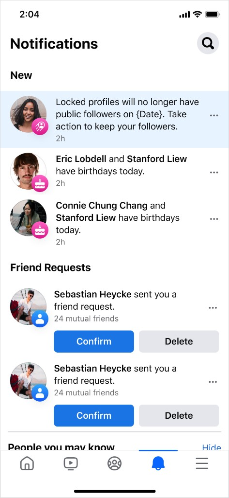

Privacy · User flows · Meta · 2025
How do you take an option away from 100M people without making them feel punished?
About 100M Facebook profiles had contradictory settings: locked for privacy, but open to public followers. Meta was retiring that combination. Anyone who wanted to keep public followers had to switch to professional mode, and everyone else would lose them.
At this scale, a confusing notification means churn and lost trust. My job was to explain a required choice clearly enough that people could make it with confidence.
The core content challenge was an emotional one.
The framing had to be honest without causing alarm, and clear enough that people could make a choice rather than just react.
Additionally, one flow had to serve very different people: adults who'd built public followings over years, teens with locked profiles who may not have fully understood their settings, and people who hadn't opened the app in months.
I directed content across 8 multi-screen flows and 5 emails. Two decisions mattered most:
My early drafts tried so hard to calm people that the drafts became vague and confusing. I rewrote the first screen around the one thing that changed, keeping or losing public followers, without nudging people toward either option.
I worked closely with Privacy, Legal, and the Help Center so the experience was both compliant and clear.

Notification
1 of 8
94.4% of people who entered the flow chose to keep their profile private. They understood the choice and made it decisively. The surprise was the other 5.6%, who switched to professional mode to keep their followers and lean into their identities as creators. The change shipped to every group, including teens, with no SEVs or rollbacks.